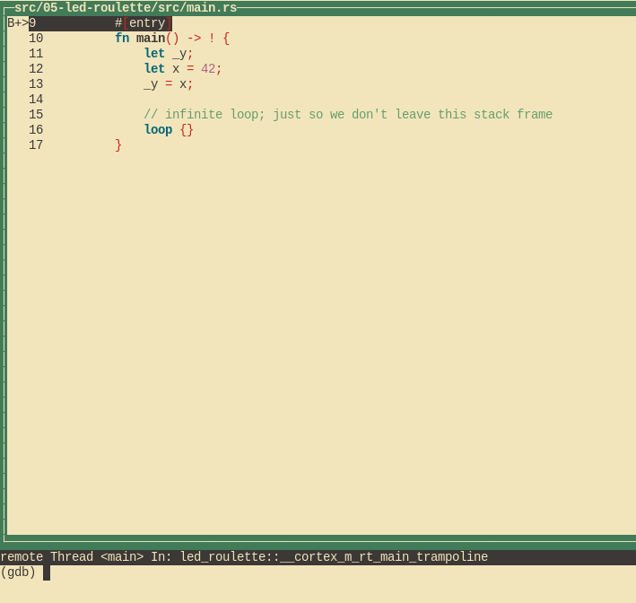

调试
这是怎么工作的？
在调试我们的小程序之前，让我们花点时间快速了解这里实际发生的情况。在上一章中，我们已经讨论了 开发板上第二个芯片的用途以及它如何与我们的计算机通信， 但我们如何实际使用它呢？
Embed.toml中的optiondefault.gdb.enabled = true使cargo-embed在闪烁后打开了一个所谓的"GDB stub"，
这是我们的GDB可以连接到的服务器，并向其发送"在地址X设置断点"等命令。然后，服务器可以自行决定如何处理该命令。
在cargo-embedGDB stub 的情况下，它将通过USB将命令转发到板上进行调试指针，然后为我们实际与MCU通信。
让我们调试！
由于cargo-embed阻塞了我们当前的shell，我们可以简单地打开一个新的shell，然后cd回到我们的项目
目录。 一旦我们到达那里，我们首先必须像这样在gdb中打开二进制文件：
# For micro:bit v2
$ gdb target/thumbv7em-none-eabihf/debug/led-roulette
# For micro:bit v1
$ gdb target/thumbv6m-none-eabi/debug/led-roulette
注意：根据您安装的GDB，您将不得不使用不同的命令来启动它，如果您忘记了它是哪一个，请查看第三章。
注意：如果
cargo-embed在这里打印很多警告，请不要担心。到目前为止，它还没有完全实现GDB 协议，因此可能无法识别GDB发送给它的所有命令，只要它不崩溃，就可以了。
接下来我们必须连接到GDB stub。它在localhost:1337默认情况下运行，因此为了连接到它运行以下命令：
(gdb) target remote :1337
Remote debugging using :1337
0x00000116 in nrf52833_pac::{{impl}}::fmt (self=0xd472e165, f=0x3c195ff7) at /home/nix/.cargo/registry/src/github.com-1ecc6299db9ec823/nrf52833-pac-0.9.0/src/lib.rs:157
157 #[derive(Copy, Clone, Debug)]
接下来我们要做的是进入程序的主要功能。我们将首先在此处设置断点并继续执行程序，直到遇到断点：
(gdb) break main
Breakpoint 1 at 0x104: file src/05-led-roulette/src/main.rs, line 9.
Note: automatically using hardware breakpoints for read-only addresses.
(gdb) continue
Continuing.
Breakpoint 1, led_roulette::__cortex_m_rt_main_trampoline () at src/05-led-roulette/src/main.rs:9
9 #[entry]
断点可用于停止程序的正常流程。该continue命令将让程序自由运行，直到它到达断点。在这种情况下，
直到它到达main函数，因为那里有一个断点。
请注意，GDB输出显示"断点1"。请记住，我们的处理器只能使用有限数量的这些断点，因此最好注意这些消息。
如果您碰巧用完了断点， 您可以使用info break列出所有当前的断点，并使用delete <breakpoint-num>删除所需的断点。
为了获得更好的调试体验，我们将使用GDB的文本用户界面 (TUI)。要进入该模式，请在GDB shell上输入以下命令：
(gdb) layout src
注意：向Windows用户致歉。GNU ARM Embedded Toolchain附带的GDB不支持这种TUI模式
:-(。

GDB的break命令不仅适用于函数名，它还可以在某些行号处中断。如果我们想跳过第13行，我们可以简单地做：
(gdb) break 13
Breakpoint 2 at 0x110: file src/05-led-roulette/src/main.rs, line 13.
(gdb) continue
Continuing.
Breakpoint 2, led_roulette::__cortex_m_rt_main () at src/05-led-roulette/src/main.rs:13
(gdb)
您可以随时使用以下命令离开TUI模式：
(gdb) tui disable
我们现在正在_y = x语句"上"; 该语句尚未执行。这意味着x被初始化，但_y未被初始化。让我们使用print命令检查这些堆栈/局部变量：
(gdb) print x
$1 = 42
(gdb) print &x
$2 = (*mut i32) 0x20003fe8
(gdb)
正如预期的那样，x包含值42。命令print &x打印变量x的地址。这里有趣的一点是GDB输出显示了引
i32*，一个指向i32值的指针。
如果我们想逐行继续执行程序，我们可以使用next命令来做到这一点，所以让我们继续执行loop {}语句：
(gdb) next
16 loop {}
_y现在应该被初始化。
(gdb) print _y
$5 = 42
您也可以使用info locals命令，而不是逐个打印局部变量：
(gdb) info locals
x = 42
_y = 42
(gdb)
如果我们在loop {}语句的顶部再次使用next，我们将陷入困境，因为程序永远不会传递该语句。
相反，我们将使用layout asm命令切换到反汇编视图，并使用stepi一次前进一条指令。通过再次发出
layout src命令，您可以随时切换回Rust源代码视图。
NOTE: 如果您错误地使用了
next或continue命令，并且GDB卡住了，您可以通过点击Ctrl+C来取消卡住。
(gdb) layout asm

如果您不使用TUI模式，您可以使用该disassemble /m命令围绕您当前所在的行反汇编程序。
(gdb) disassemble /m
Dump of assembler code for function _ZN12led_roulette18__cortex_m_rt_main17h3e25e3afbec4e196E:
10 fn main() -> ! {
0x0000010a <+0>: sub sp, #8
0x0000010c <+2>: movs r0, #42 ; 0x2a
11 let _y;
12 let x = 42;
0x0000010e <+4>: str r0, [sp, #0]
13 _y = x;
0x00000110 <+6>: str r0, [sp, #4]
14
15 // infinite loop; just so we don't leave this stack frame
16 loop {}
=> 0x00000112 <+8>: b.n 0x114 <_ZN12led_roulette18__cortex_m_rt_main17h3e25e3afbec4e196E+10>
0x00000114 <+10>: b.n 0x114 <_ZN12led_roulette18__cortex_m_rt_main17h3e25e3afbec4e196E+10>
End of assembler dump.
看到左侧的箭头=>了吗？它显示处理器下一步将执行的指令。
如果不在TUI模式下，在每个stepi命令上，GDB将打印语句和处理器下一步将执行的指令的行号。
(gdb) stepi
16 loop {}
(gdb) stepi
16 loop {}
在我们转到更有趣的事情之前，最后一个技巧。在GDB中输入以下命令：
(gdb) monitor reset
(gdb) c
Continuing.
Breakpoint 1, led_roulette::__cortex_m_rt_main_trampoline () at src/05-led-roulette/src/main.rs:9
9 #[entry]
(gdb)
我们现在又回到了main起点！
monitor reset将重置微控制器并在程序入口点停止它。以下continue命令将让程序自由运行，直到它
到达具有断点的main函数。
当您错误地跳过了程序的一部分时，这个组合非常方便，对检查感兴趣。您可以轻松地将程序的状态回滚到其最新状态开始
细节：此
reset命令不清除或触摸RAM。该内存将保留上次运行时的值。不过，这不应该是一个问 题，除非您的程序行为取决于未初始化变量的值，但这就是未定义行为(UB)的定义。
我们完成了这个调试会话。你可以用quit命令结束它。
(gdb) quit
A debugging session is active.
Inferior 1 [Remote target] will be detached.
Quit anyway? (y or n) y
Detaching from program: $PWD/target/thumbv7em-none-eabihf/debug/led-roulette, Remote target
Ending remote debugging.
[Inferior 1 (Remote target) detached]
注意：如果您不喜欢默认的GDB CLI，请查看gdb-dashboard。它使用Python将默认的GDB CLI转换为 显示寄存器、源视图、程序集视图和其他内容的仪表板。
如果您想了解更多关于GDB的功能，请查看如何使用GDB部分。
下一步是什么？我承诺的高级API。